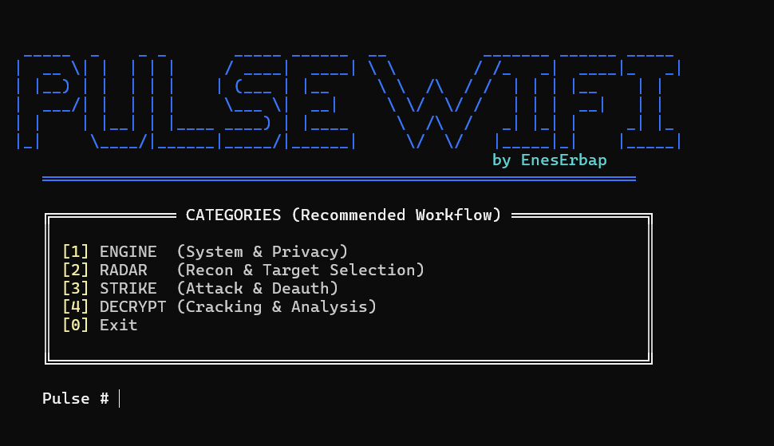

Terminalin Gücü, Python'ın Esnekliği. Linux sistemler için profesyonel seviyede hepsi bir arada kablosuz denetim aracı.
git clone https://github.com/eneserbap/PulseWifi.git

Gelişmiş denetimler için tasarlanmış yüksek performanslı modüller.
Çevredeki Wi-Fi trafiğini, BSSID ve kanalları anlık olarak haritalandırır. Veri odaklı görünürlük sağlar.
Mesh ve Roaming ağlara özel algoritmalarla gelişmiş deauth saldırıları düzenler.
Sosyal mühendislik testleri için saniyeler içinde onlarca sahte SSID (Beacon Spam) oluşturur.
WPA/WPA2 el sıkışma (handshake) verilerini otonom olarak yakalar ve depolar.
Arka planda güvenli süreç yönetimi (subprocess) ve ağ restorasyonunu (cleanup) yönetir.